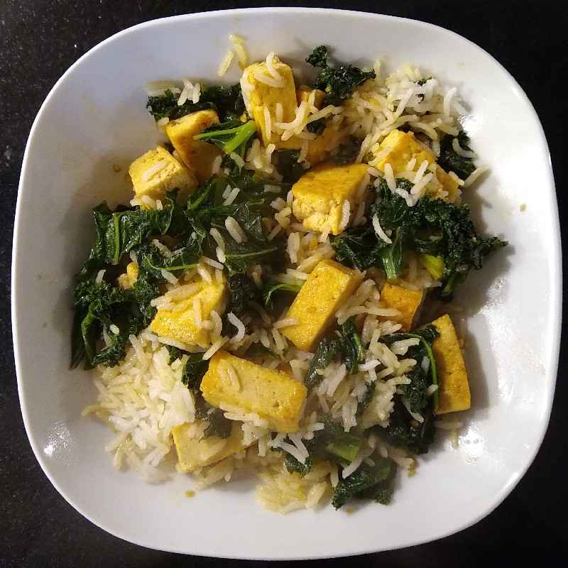

Teriyaki Tofu

Description
Quick and tasty stir fry recipe with a simple teriyaki sauce.
Ingredients
- Block of firm tofu (around 280g)
- 150g basmati rice
- 4 pak choi
- 2 garlic cloves
- 3 tbsp soy sauce
- 2 tbsp fresh ginger
- 1 tbsp golden syrup
- 50g cashew nuts
- 1 ½ tbsp coconut milk powder (optional)
Steps
- Bring 300ml of water to boil for the rice as you prep the rest of the ingredients: cube the tofu, chop the garlic and ginger, thinly slice the pak choi.
- Toast the cashews in a frying pan for around 2-3 minutes. Once they're done, remove, roughly chop, and set aside.
- Stir the coconut milk powder and ¼ tsp salt into the boiling water. Add rice, turn down the heat, cover with a lid. Cook for 10 minutes, then remove from the heat and let rest for 10 minutes (leave the lid on).
- Mix the soy sauce, ginger, golden syrup and garlic together in a bowl.
- Put the pan back on over a high heat and add a tbsp of oil. Fry your tofu until nice and golden brown on the outside, around 5-7 mins.
- Reduce the heat to a medium and add the pak choi. Cook for another 2-3 mins, add the sauce and stir together, then cook for another 2-3 mins.
- Fluff up the rice and serve with a sprinkling of your toasted cashews.
Notes
Other leafy greens can be tried instead of the pak choi: curly kale, baby spinach, etc.